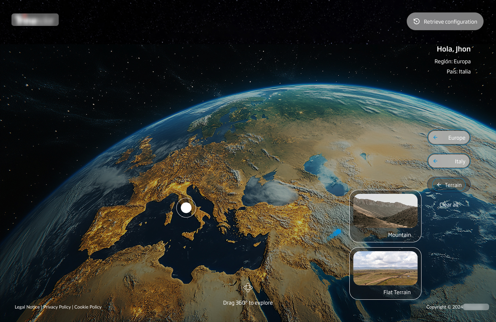
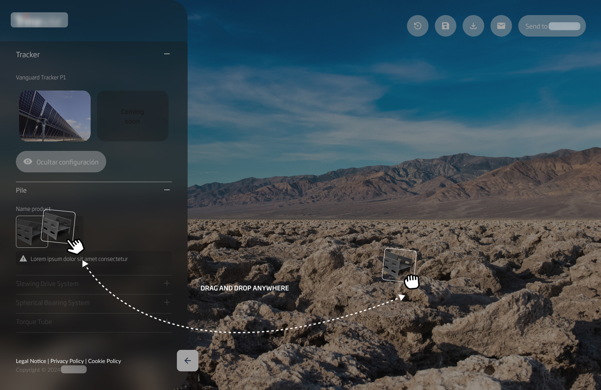
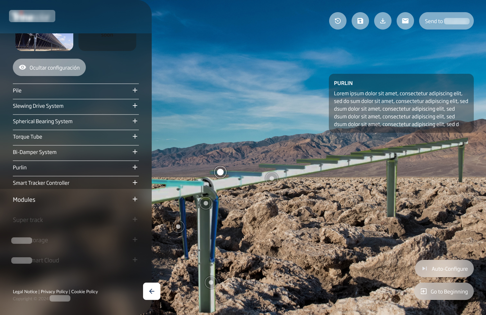
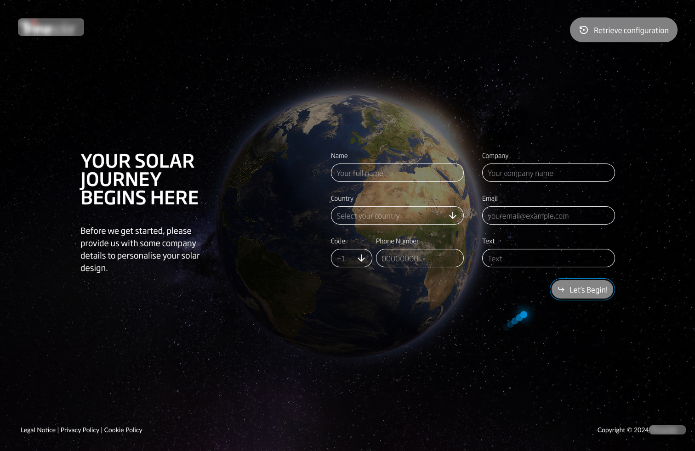
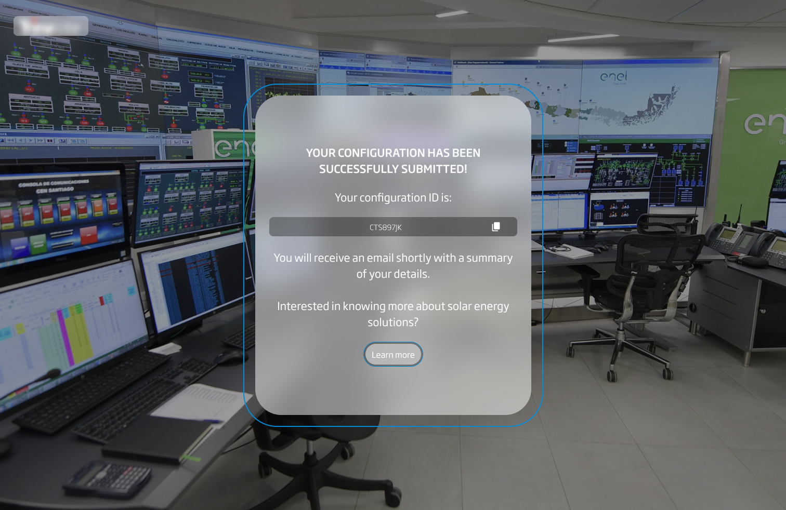

01 — Challenge
The Challenge
Trina Solar, a global leader in solar energy, needed an interactive web platform that would allow engineers and buyers to design custom solar plants in real time. Budget constraints meant the configurator had to be built from scratch — no off-the-shelf solution could meet their requirements.

The platform required 3D model integration, terrain adaptation across multiple surface types, real-time inventory selection, configuration saving, and PDF report generation — all within a web browser, accessible to both technical and non-technical users.
02 — Requirements
Key Project Requirements

- Fully interactive solar plant configurator in the browser
- Terrain adaptation across flat, hillside, and rooftop surfaces
- Real-time configuration with inventory selection
- Save configurations and export detailed PDF reports
- Modular and scalable design system
- 3D model integration for visual plant representation
03 — Process
My UX Process
Research & Analysis
Studied solar plant engineering workflows, user profiles (engineers, procurement, sales), and competitive landscape.
Concept & Wireframing
Defined the configurator interaction model — panel placement, terrain selection, inventory sidebar — through low-fi wireframes.
Prototyping & UI Design
High-fidelity interactive prototypes simulating the real-time configurator experience, tested with solar engineers.
Design System
Built a modular design system aligned with Trina Solar's brand — controls, panels, status indicators, and data tables.
Usability Testing
Tested with engineers and non-technical buyers, iterating on the configuration flow and PDF output format.
Final Implementation
Full handoff with detailed specs for 3D integration, interaction states, and responsive breakpoints.

04 — Results
Results and Deliverables
- Fully interactive configurator live at trinasolar.com
- Terrain adaptation across multiple surface types
- Modular design system reused across product pages
- Dynamic configuration with real-time inventory updates
- Exportable PDF reports used by sales and engineering teams

